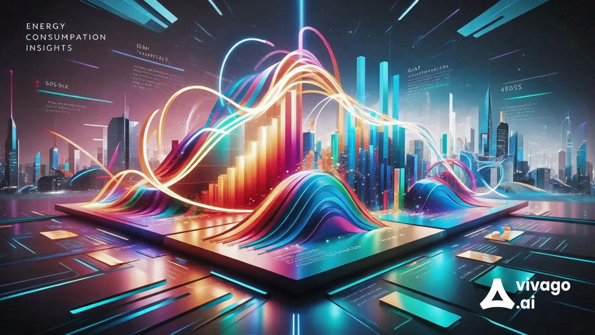

What are Energy Consumption Insights?

Energy consumption insights refer to the analysis and interpretation of data related to energy usage in various sectors, including residential, commercial, and industrial. These insights are derived from data collected through smart meters, energy management systems, and utility reports, enabling organizations and individuals to understand their energy consumption patterns.
By analyzing energy consumption data, stakeholders can identify trends, optimize energy use, and reduce waste, leading to cost savings and a smaller carbon footprint.
Importance of Energy Consumption Insights
Understanding energy consumption is critical for several reasons:
- Cost Reduction: By analyzing energy use, organizations can identify areas where they can reduce energy consumption and cut costs.
- Sustainability Goals: Insights help organizations align their energy use with sustainability initiatives and reduce their overall carbon footprint.
- Regulatory Compliance: Many regions have regulations requiring energy reporting and reduction targets.
- Operational Efficiency: Understanding energy patterns can lead to improved operational practices and enhanced productivity.
Uses of Energy Consumption Insights
Energy consumption insights can be utilized in various ways, including:
- Energy Audits: Conducting audits to assess energy efficiency and identify opportunities for improvement.
- Demand Response Programs: Participating in programs that adjust energy usage during peak times to manage load and reduce costs.
- Renewable Energy Integration: Understanding consumption patterns to better integrate renewable energy sources into existing systems.
- Predictive Analytics: Using data to forecast future energy needs and make informed investment decisions.
- Public Awareness: Educating consumers about their energy use and encouraging energy-saving behaviors.
Contact Us
If you would like to learn more about energy consumption insights or have questions, please reach out to us:
Email: ecoitsolutions786@gmail.com
Phone: 9390455709
Our team is here to help with data-driven solutions for a sustainable future.